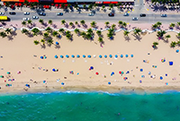
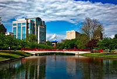

Stories of Las Vegas
A lot of people will not agree with this but I love Las Vegas, I'm also biased because my whole dads side of the family lives there. The actual city is kind of gross especially the strip but the hotels like the Cosmopolitan and Aria try and make the city a lot more luxourius and the hotels really feel like a resort. Driving around with my parents on the outers of the city was so interesting learning about where they grew up. I've been to vegas about 4 times and when your there hiking in the Sierra Nevada Mountains is so beautiful, if you go during the spring the mountains still have snow on them and it is beautiful. Vegas has a lot to offer when you look outside of just the inner city.
Day in Destin
 Destin while it is super pretty is incredibly busy and the areas around the beach are super dirty. The times I've gone its been super busy to where you would have to reserve a spot on the beach for almost $150 for 4 people. The resorts by Destin are very nice to stay at however, all the pools are clean and theres many events and at the specfic resort I stayed at there was a cafe, gift shop, swim store, 2 restaurants, and an open bar.
I say stay at a resort in Destin and drive about 10 minutes down the road to Princess beach, you get the same super white beaches and super blue ocean with half the people. On the way to Princess theres so many cool shops and restraunts that you should defenintly give a shot!
Alabama Adventures
This is a growing town in Alabama about 15 minutes away from Decatur. I went here once for a soccer trip and I wish I could've stayed longer! On Main street there are so many restaurnts with great food and great service the city is super welcoming and there's plenty to do around. It is super nature involved and totally worth giving a shot!